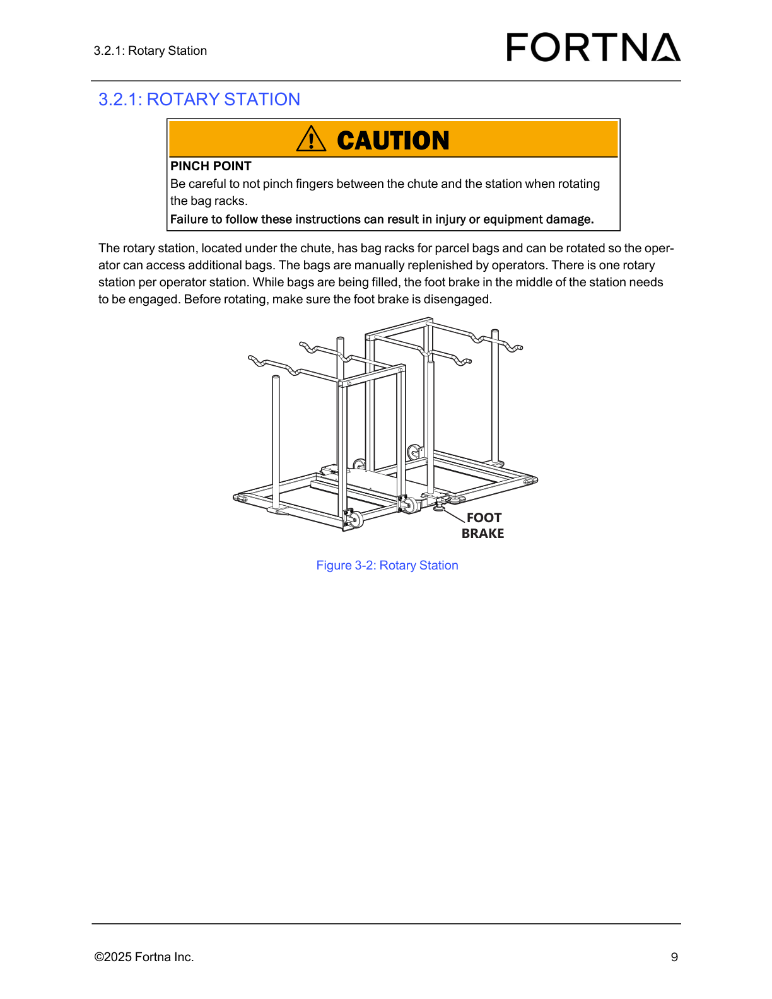
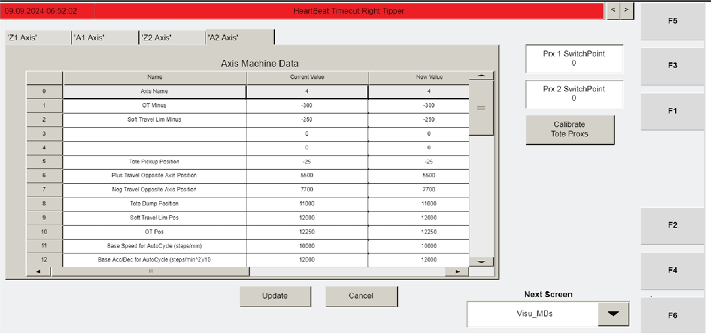

| Procedure ID | proc_perform_daily_maintenance_checklist_operator_station_chute_stacklights_guards_qr_v1 |
|---|---|
| Title | Perform Daily Maintenance Checklist: Operator Station, Chute, Stacklights, Guards, and QR Codes |
| Procedure Type | operation |
| Primary Role | operator |
| Support Safe | Yes |
| Capability Tags | device_roster_state |
| Access Surface | physical_floor |
| Audience Roles | operator |
| Failure Pattern Tags | None |
| Validation Status | needs_sme_review |
| Merge Status | source_finalized |
Complete the daily inspection items to confirm the Operator Station controller/chute are intact and that stacklights, guards, and QR codes are in good condition.
Use this daily, on-site inspection checklist to verify the Operator Station controller, Operator Station chute, stacklights, guards/attaching hardware, and QR codes (floor and racks) are in acceptable condition before operation.



Responsible role: operator
Instruction:
On the Daily Maintenance Checklist form, record the Inspection Date, Inspected By, and Unit Inspected.
Expected result:
The form has entries for Inspection Date, Inspected By, and Unit Inspected.
Responsible role: operator
Instruction:
Visually inspect the Operator Station controller for damage.
Expected result:
No damage is observed on the Operator Station controller.
Stop or Escalate If:
Responsible role: operator
Instruction:
Visually check the Operator Station chute area and ensure it is free of debris.
Expected result:
No debris is present in the Operator Station chute.
Stop or Escalate If:
Responsible role: operator
Instruction:
Verify the stacklights are operational.
Expected result:
Stacklights are operational (as determined by your site’s operational check for stacklights).
Stop or Escalate If:
Responsible role: operator
Instruction:
Inspect the guards and verify the attaching hardware is secure.
Expected result:
Guards are intact and attaching hardware is secure.
Stop or Escalate If:
Responsible role: operator
Instruction:
Inspect all QR codes on the floor for damage or peeling.
Expected result:
All floor QR codes show no damage and no peeling.
Stop or Escalate If:
Responsible role: operator
Instruction:
Inspect all QR codes on the racks for damage or peeling.
Expected result:
All rack QR codes show no damage and no peeling.
Stop or Escalate If: